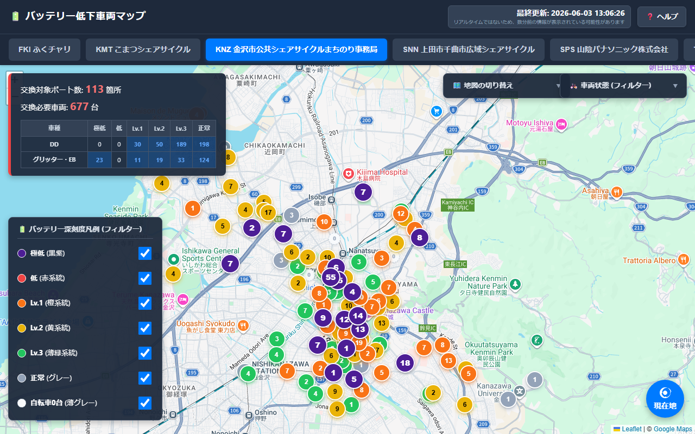
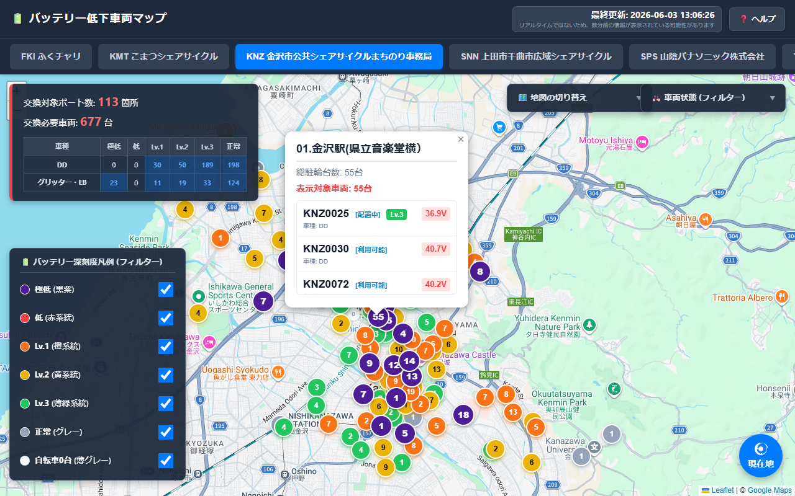

作業員用システム 使い方マニュアル
本システムは、シェアサイクルポート内のバッテリーが低下している車両（交換対象車両）をリアルタイムにマップ上で可視化し、現場作業員のバッテリー交換業務を効率化するためのツールです。
💡 主な特徴:
アプリの基本画面構成は以下の通りです。

本システムはレスポンシブデザインを採用しており、使用している端末の画面サイズに応じて最適な表示へ自動的に切り替わります。
画面の左右に「サマリーパネル」「凡例（フィルター）」「車両状態フィルター」「ベースマップ切り替えパネル」が常時配置され、広いマップと同時に多くの情報を一度に確認できます。
画面サイズ（横幅768px以下）を検知すると、現場で片手でも操作しやすい専用 of モバイルUIに自動で切り替わります。
ピンの色は、そのポート内で「最も深刻なバッテリー状態の車両」のレベルに基づいています。
極めて重大なエラーまたは最優先の交換対象車両です。
速やかな交換が必要な車両です。
バッテリー容量が低下している車両です。
注意が必要なレベルの車両です。
バッテリーが十分にある状態の車両です。
ポート内に車両が1台も存在しない状態です。
マップ上のピンをクリック（タップ）すると、対象ポートの車両情報が詳細カードとして表示されます。

詳細ポップアップには以下の情報が表示されます：
現場での効率的な作業をサポートするため、各種フィルターとマップ補助機能が搭載されています。
未施錠未返却とは：
シェアサイクルの物理鍵（サークル錠）がかかっていない状態で、利用中のまま放置されている状態です。
通常、物理鍵をおろせば（施錠すれば）、ポートの通信範囲内であれば自動で返却処理がなされ利用可能に戻りますが、鍵がかかっていないと、作業員が現地に施錠しに行かない限り延々と「利用中」のままになり、自転車が利用不可能となります。このため、早期の現地対処が必要な要対策車両となります。
マップ上の特定のポートだけを複数選択し、そのポート群だけの合計値や車両情報をサマリーパネルに集計・表示する機能です。
本システムでは、ユーザーが設定したマップの表示状態やフィルターの条件がブラウザ（LocalStorage）に自動でキャッシュ保存され、再読み込み時やPC・スマートフォン等のデバイス切り替え時にも同じ状態が復元されます。
💡 メリットとリセット操作:
ブラウザの「更新」ボタンを押したり、誤って画面を閉じてしまったりした場合でも、直前まで行っていた作業状態（特定のポートを選択していた状態やズーム位置など）が完全に復元されるため、現場での再設定の手間が省けます。
🔄 キャッシュのクリア（リセット）:
保存された表示状態やフィルター設定をすべて消去し、初期状態（デフォルト表示）に戻したい場合は、画面左上（スマホは「📊 サマリー」ドロワー内）にある「🔄 リセット」ボタンをクリック（タップ）してください。確認ダイアログが表示され、「OK」を選択するとキャッシュがクリアされて初期設定に戻ります。
⚠️ データの更新間隔について:
マップに表示される元データは、タスクスケジューラにより5分間隔で自動アップロードされています。アプリ自体は2分ごとに最新のキャッシュファイルを読み込みに行きますが、元データの更新タイミングにより最大で約5分間のタイムラグが発生する可能性があります。ヘッダーの「最終更新」時刻をご確認の上、現場での最終確認を行ってください。
🔄 自動描画更新の一時保留制御:
アプリはバックグラウンドで定期的にデータ読み込みを行いますが、ユーザーが「地図をスクロール・ズーム操作している間」や、「ピンの詳細ポップアップを開いている間」は、作業を妨げないようにマップの自動再描画を一時的に保留します。操作を終えて約5秒後に保留されていた最新のデータが適用されます。
本システムは、アクセスするURLの末尾に付与するパラメータ（?area=... など）によって、表示モードや機能が自動的に切り替わります。
| モード | URLパラメータの例 | 表示と動作の仕様 |
|---|---|---|
| パラメータ無し | index.html |
データは読み込まれず、空のマップが表示されます。必ずパラメータを付与してアクセスしてください。 |
| エリア制限モード | index.html?area=KNZ |
指定されたエリア（例：金沢）のピンのみを表示します。画面上部のエリア選択タブは非表示になりますが、右上の車両状態フィルターは利用可能です。 |
| 金沢大学サポーターモード | index.html?kindai |
金沢大学エリアに強制固定され、対象となる特定の8ポートのみが表示されます。車両フィルタは「利用可能」に固定されます。 |
| 車両状態制限モード | index.html?status=available |
車両状態フィルターが非表示となり、自動的に「利用可能」状態の車両のみに制限されてマップ上にピンが表示されます。 |
| 管理者モード (kanriall) | index.html?kanriall |
すべての機能が解放されます。 画面上部にエリア選択タブが表示され、自由に表示エリアを切り替えられます。また、右上の車両状態フィルターも利用可能です。 |